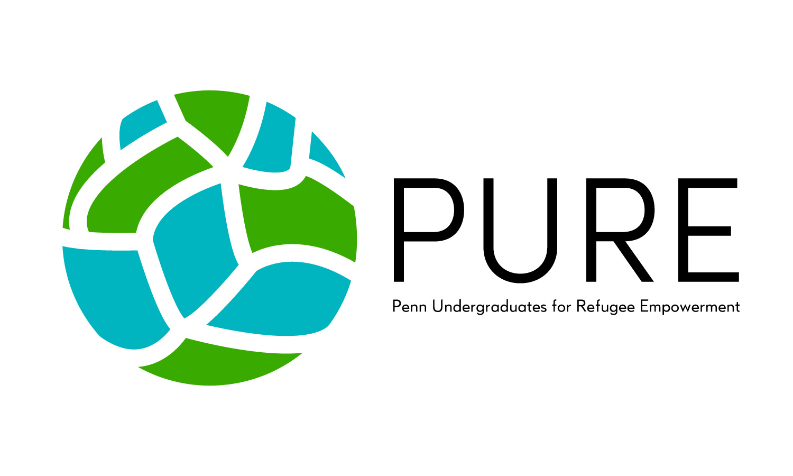
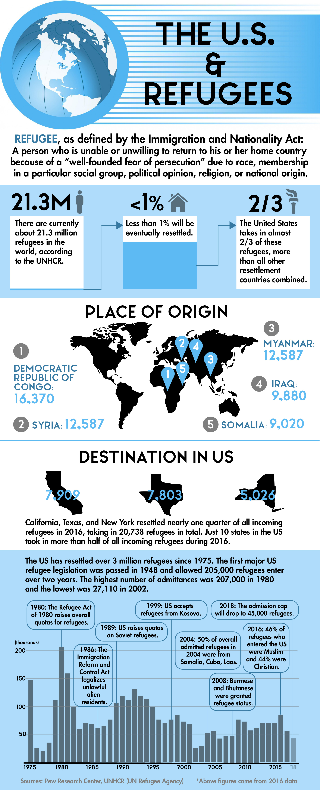
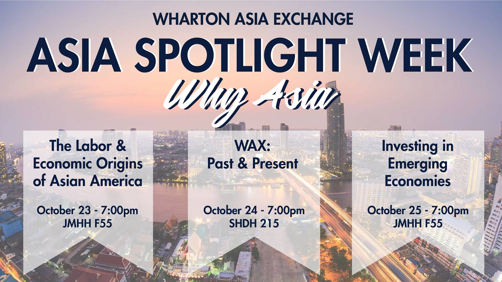

This logo was designed for an on-campus organization called Penn Undergraduates for Refugee Empowerment. Inspired by the spherical lights at Philadelphia City Hall, I played with several motifs representing globalism and interconnection before settling on this final product.

This infographic was designed for and presented at the UN TOGETHER Summit of January 2018. The task was to design an informative piece highlighting details of the refugee crisis and the history of refugee restrictions in the United States.

This Facebook cover photo was designed to promote the Asia Spotlight Week event in October 2018 for the on-campus Asian business organization known as Wharton Asia Exchange.